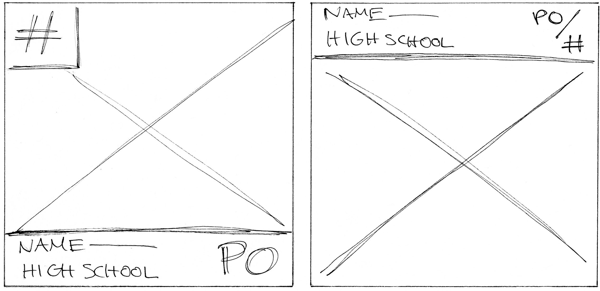
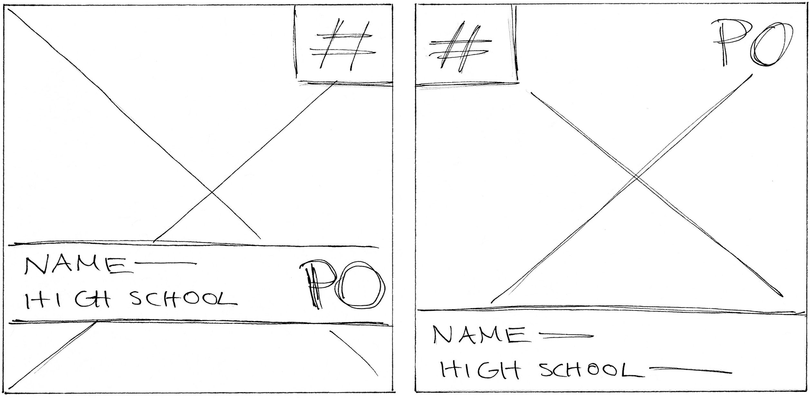
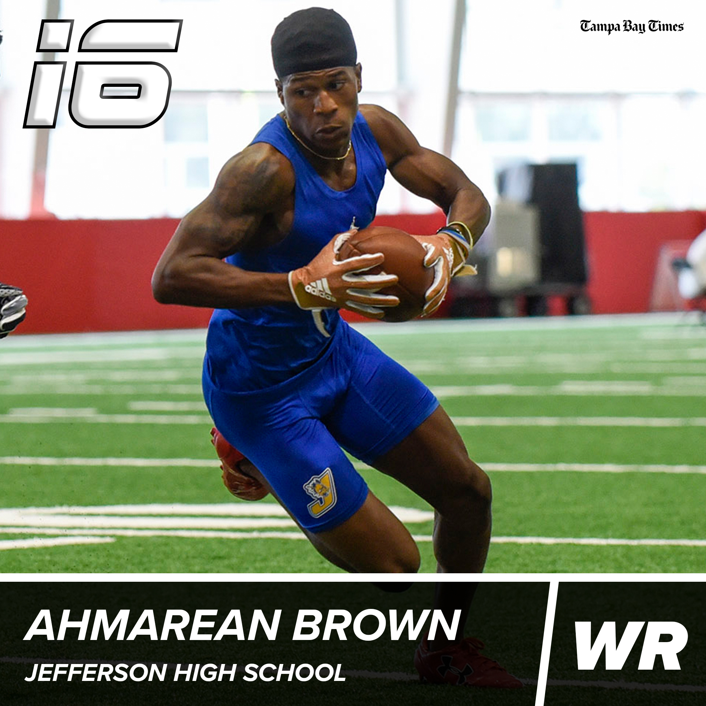
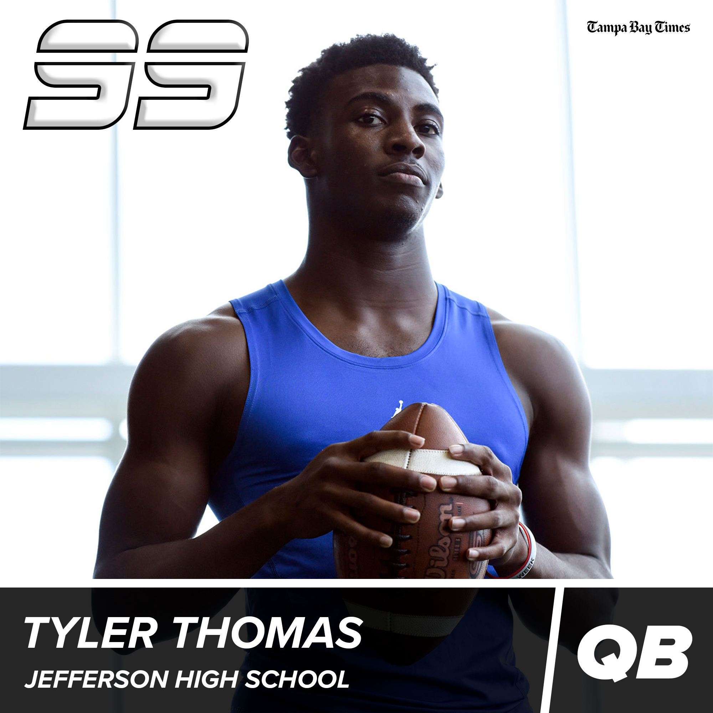
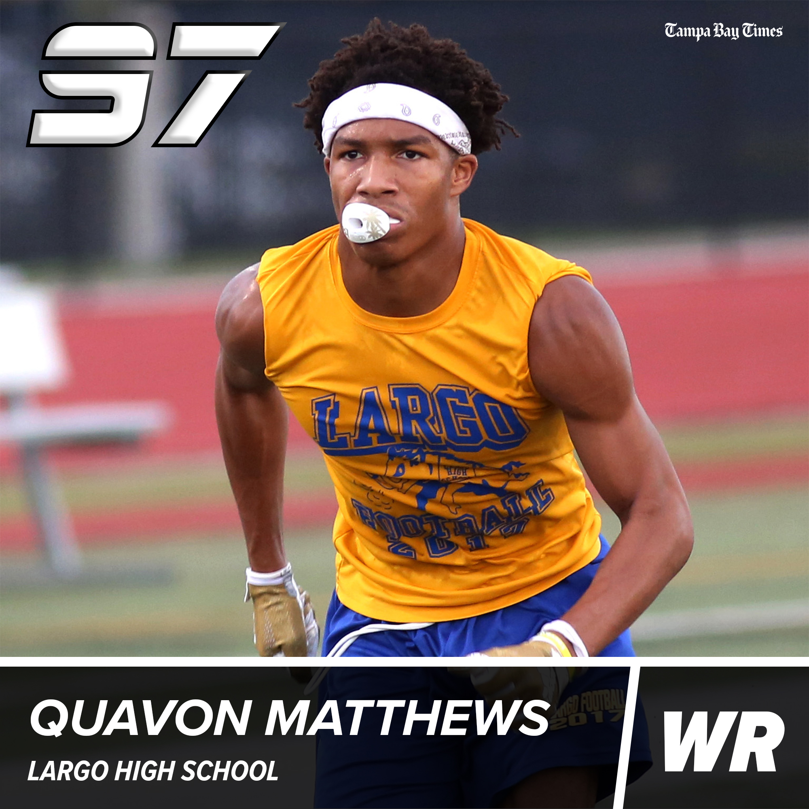
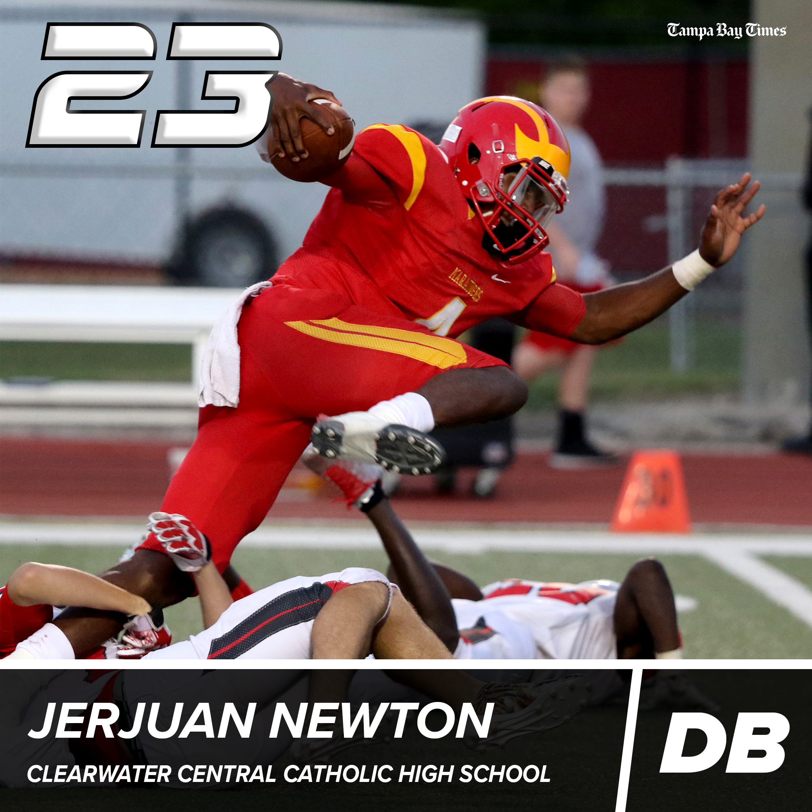

Top 100 Players
Social Media Design
Every year, the Tampa Bay Times ranks the top 100 high school football players in the area. Below is a sample of the player cards I created. Starting at 100, 10 player cards were posted each day on Twitter.




Simplifying the information on the bottom of the graphic to a simple sans-serif, the information is more legible and stands out from the number in the top-left corner. Below are samples of the final template used for all 100 players.


